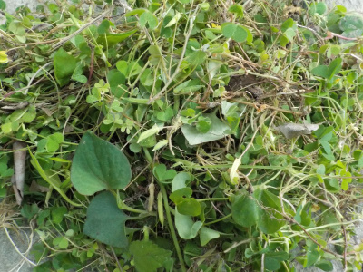
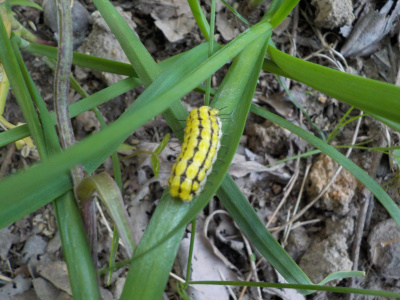
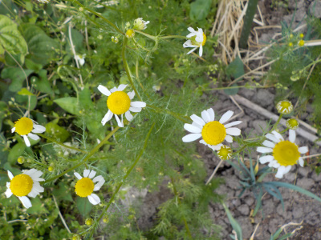
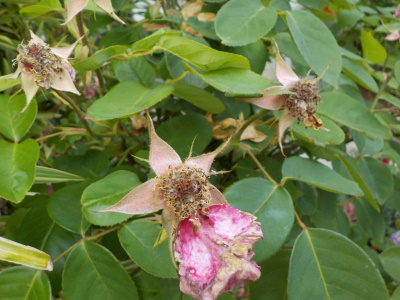
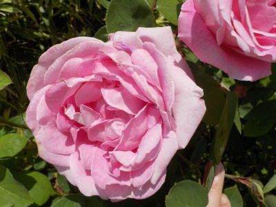
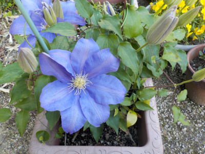

遊びで植物を育てよう
2019/05/26
草抜きしました。
畑の草抜きをコツコツしました。

ゴールデンウィークにもしたけどな。
すぐに伸びますね。

毛虫がいました。ヤバイ。危険だと思うとやる気がなくなりやめました。
【5月TOP】
【日記TOP】
【園芸TOP】
2019/05/26
カモミールはいい匂いです。
畑にいるとカモミールの香りがします。

今年は量が少ないので収穫しません。なのでカモミールティーは飲めないな。
秋になったら種まきするつもりなので、来年は沢山収穫する予定。
【5月TOP】
【日記TOP】
【園芸TOP】
2019/05/26
バラが終わった。
花が終わったので花ガラを摘みました。

ちょっと多めに切って小さくしましたが、もっと切ってもよかったかな。
バラの高さって何センチくらいがいいんでしょうね。
【5月TOP】
【日記TOP】
【園芸TOP】
2019/05/12
バラが絶好調です。
各地であるバラまつりはもうちょっと先ですが、家のバラは今頃が一番いいかな。

四季咲きなのでよく咲いてるんえすが、今は花の大きさが普段よりかなり大きいです。
とっても重そう。
私はこんな厚い花よりも、シンプルなのが好きだな。
【5月TOP】
【日記TOP】
【園芸TOP】
2019/05/03
挿し木で増やしたクレマチスが咲きました。
自分で挿し木から育てたものが成長して、花を咲かせる様になりました。

達成感が有りました。
良かった。いい気分です。
もうちょっとしたら挿し木の季節です。次は何を育てようかな。
【5月TOP】
【日記TOP】
【園芸TOP】
過去の日記
【2024年5月の日記】
【2023年5月の日記】
【2022年5月の日記】
【2021年5月の日記】
【2020年5月の日記】
【2019年5月の日記】
【2018年5月の日記】
【2017年5月の日記】
【2016年5月の日記】
【2015年5月の日記】
【2014年5月の日記】
【2013年5月の日記】
【5月TOP】
【日記TOP】
【園芸TOP】
畑仕事じゃないよ。
【おいしいものを食べよう。】【たくさん寝よう。】
【ソロ活をしよう!】【季節感のあることをしよう。】【動画視聴はほどほどに。】【当サイトの全てのコンテンツは無断転載禁止です。】